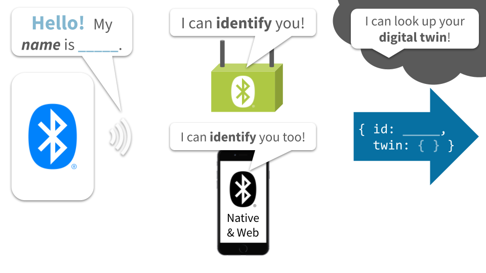
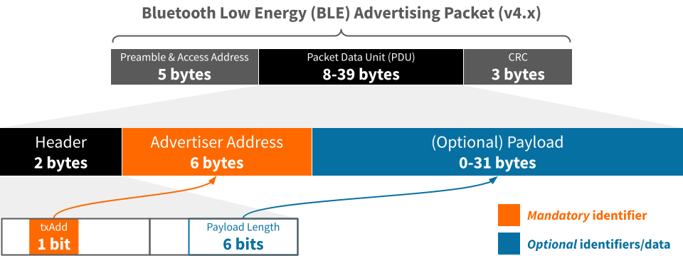

Best practices for BLE identifiers
Assignment of Bluetooth Low Energy (BLE) identifiers for interoperability and interpretability
The TL;DR (Too Long; Didn't Read)
Learn how we at reelyActive assign BLE identifiers based on best practices we've established.
- Established how?
- When we founded reelyActive in 2012, we recognised that BLE would become the de facto global standard for active RFID, and have been consistently outspoken about best practices.
- Why best practices?
- BLE devices are all around us, representing people, products and places. Best practices foster spontaneous discovery and interpretation, and maximise interoperability.
- Are these observed?
- Not especially. As of 2020, we've seen few standard best practices emerge, hence our motivation to create this tutorial and The InteroperaBLE Identifier!
Best practices breakdown
This tutorial is organised into four parts as follows:
- Part 1 of 4
-
Anatomy of a BLE advertising packet
Just enough structure with just enough space for data. - Part 2 of 4
-
Platform and OS constraints
Just because it's possible doesn't mean it's permitted - Part 3 of 4
-
Existing protocols and standards
Eddystone and iBeacon are widely observed open standards - Part 4 of 4
-
The InteroperaBLE Identifier
Our best practice proposal for maximum interoperability
Links to related tutorials are provided at the end.
Anatomy of a BLE advertising packet Part 1 of 4
Just enough structure with just enough space for data.
- Advertising packet?
- Here we'll examine only the advertising packets that BLE devices can spontaneously broadcast to any devices listening in range.
- Why not other packets?
- Paired (one-to-one) communication between Bluetooth devices is outside the scope of this tutorial, but the best practices for identifiers may nonetheless apply.
The advertising packet structure
The diagram below illustrates the structure of a BLE advertising packet with the Packet Data Unit (PDU) expanded and identifier content highlighted. The preamble, access address and CRC are typically generated/processed automatically, and are irrelevant to this discussion.
The mandatory Advertiser Address
Every BLE advertising packet includes a 48-bit Advertiser Address and a single-bit txAdd flag. The latter indicates whether this address is:
- 0 | Public
- Unique identifier from a block of addresses assigned by the IEEE to the device manufacturer
- 1 | Random
- Random identifier selected automatically in software, or specifically by the user
A random identifier may not be static. A device may cycle a random identifier at any time.
A random identifier may not be unique. Collisions are nonetheless unlikely unless assignment is non-random.
Other optional identifiers
A BLE advertising packet may include an optional payload of up to 31 bytes in which additional identifiers and/or data may reside. The Bluetooth Generic Access Protocol (GAP), documented here, affords many payload options. Below are the most common for identifiers.
Identifier as a UUID
Bluetooth GAP and the advertising packet payload capacity allow for one or more 16-bit or 32-bit service class UUIDs or a single 128-bit service class UUID. Only a 128-bit UUID can be user-generated, as the shorter UUIDs are assigned by the Bluetooth SIG.
A service class UUID is intended to represent a common service among a class of devices. For instance, a given model of FitBit will advertise a common service UUID.
A service class UUID is therefore not suited for the unique identification of a device.
Identifier as Service Data
Bluetooth GAP and the advertising packet payload capacity allow for the inclusion of up to 20 bytes of data for a specific 16-bit service class UUID.
Member Service Data
An entity may purchase a 16-bit member service from the Bluetooth SIG and define the service data structure as the wish, either as an open or closed standard. An example is Google Eddystone which has the reserved UUID 0xFEAA and supports several different frame types defined as open standards (). Eddystone-UID is presented in detail in Part 4. Another example is Tile which has the reserved UUID 0xFEED but whose specification is proprietary and not published.
GATT Service/Characteristic Data
The Bluetooth SIG maintains assigned numbers for GATT Services and Characteristics. It is possible to include service/characteristic data provided it does not exceed the payload capacity. An example is reelyActive transceiver infrastructure, where each device advertises its unique EUI-64 identifier as a System ID characteristic (0x2A23).
Service data offers several alternatives for the unique identification of a device.
Identifier as Manufacturer Data
Bluetooth GAP and the advertising packet payload capacity allow for the inclusion of up to 22 bytes of use-as-you-please data for manufacturers who register (at no cost) with the Bluetooth SIG and receive a 16-bit company identifier.
For instance, iBeacon is defined as an open standard () by Apple, uses their company identifier (0x004C), and includes a 128-bit UUID and a major and minor identifier of 16-bits apiece. This is presented in detail in Part 4.
Manufacturer data affords full freedom for the unique identification of a device, constrained only by the payload capacity.
Platform and OS constraints Part 2 of 4
Just because it's possible doesn't mean it's permitted by the platform or operating system.
- Not permitted?
- Resource constraints, design decisions, privacy concerns and even business models may restrict what can be sent, received or accessed.
- What's the impact?
- You might not be able to do what you want, or how you want to do it, especially if it needs to work on all platforms.
The BLE processing pipeline
The diagram below illustrates the processing pipeline between a raw packet over-the-air and the interface with application software under a developer's control. Although the advertising packet structure is standard, as presented in the previous section, the processed data available for a software application is not standard: it depends on the platform and OS.
Similarly, application software is constrained by the platform and OS with regard to any advertising packets it wishes to transmit.
Key constraints by platform/OS
The table below highlights the key constraints with respect to receiving and transmitting identifier data in BLE advertising packets.
| Raw | Espruino | Web | |||
|---|---|---|---|---|---|
| Receive functionality | |||||
| Access advertiser address | |||||
| Access PDU elements | |||||
| Access raw PDU | |||||
| Transmit functionality | |||||
| Specify advertiser address | |||||
| Transmit iBeacon | |||||
| Transmit user-defined payload | |||||
Mobile devices use a random advertiser address which they cycle regularly (ex: every 15 minutes)
reelyActive infrastructure operates raw, without a Bluetooth stack
Identifier interoperability summary
The objective of BLE identifier best practices being to maximise interoperability, the platform and OS constraints presented above lead to the following observations:
- Advertiser Address
- Although mandatory, access is not universal and mobile devices cycle the identifier periodically in the interest of user privacy ().
- Identifier in payload
- All platforms allow access in some form to packet payload elements, and allow some form of user-defined payload transmission.
The following section presents existing protocols and standards which include identifiers in the BLE advertising packet payload.
Existing protocols and standards Part 3 of 4
Eddystone and iBeacon are among the few widely observed open standards.
- Whose standards?
- Apple introduced the iBeacon open standard in 2013 and Google followed suit with the Eddystone open standard in 2015.
- Et tu, Bluetooth?
- The Bluetooth Core Specification is the foundation for higher-level protocols such as the above.
Beacons: a brief history
In 2013 Apple unveiled iBeacon to enhance the location awareness and interactivity of their mobile devices. By strategically placing inexpensive battery-powered beacons throughout a space, mobile devices can estimate their position and/or trigger actions based on proximity.
The week of the iBeacon launch, we published this video demonstrating the potential of the inverse use case, where the mobile device itself transmits iBeacon. We expanded on this use case in this article featured in GigaOM and evangelised the concept at Bluetooth World 2014.
In 2015 Google released Eddystone, similarly intended for battery-powered beacons to transmit information to the mobile device, with Android supporting this use case. Eddystone extends the proximity beacon concept, adding the potential to transmit a (short) URL, telemetry data and encrypted identifiers.
Although both iOS and Android allow developers limited possibility to transmit BLE advertising packets, history has shown that Apple and Google are committed to the mobile-device-as-receiver model. During the brief period of Android support for Google's Physical Web project we were able to demonstrate the limits of mobile peer-to-peer discoverability in this video and accompanying blog post. In short, mobile peer-to-peer discovery with BLE is not practically supported by iOS and Android.
Although the hype around beacons for mobile has long since waned, as of 2020, hundreds of millions of beacons have nonetheless been deployed worldwide, with iBeacon and Eddystone clearly established as the prevailing standards. As a result, regardless of vendor, a battery-powered beacon purchased today is almost assured to support both iBeacon and Eddystone, often simultaneously, even if these beacons are increasingly destined for non-mobile applications such as personnel/asset tracking and environmental sensing.
iBeacon and Eddystone-UID
The following table compares the properties of iBeacon and Eddystone-UID which together emerged as the standards for proximity identification not just of BLE, but of all active RFID technologies.
| iBeacon | Eddystone-UID | |
|---|---|---|
| Entity identifier | 128-bit UUID | 80-bit Namespace ID |
| Instance identifier | 16-bit Major & 16-bit Minor | 48-bit Instance ID |
| Tx Power Indication? | Yes, measured @ 1m | Yes, measured @ 0m |
| Additional data | — | 16-bits RFU* |
* Reserved for Future Use
In summary, both iBeacon and Eddystone-UID share the same structural elements, although the number of bits allocated to each varies. Both have at least 80-bits (280 values) of entity identifier to indicate to which entity or organisation the device belongs, and at least 32-bits (232 values) of instance identifier to uniquely identify the device itself. Moreover, both provide an indication of transmission power to facilitate ranging and proximity estimations.
The following section presents a best practice for identification which can be implemented to equal effect in either iBeacon or Eddystone-UID.
The InteroperaBLE Identifier Part 4 of 4
Our best practice proposal for maximum interoperability of BLE identifiers.
- What's the purpose?
- To provide a means of identification that can be interpreted by all platforms and readily translated into a URL for potential association with a digital twin.
- Doesn't that exist?
- The Physical Web initiative by Google attempted this before it was discontinued. To the best of our knowledge there are no widely-adopted alternatives.
The InteroperaBLE Identifier structure
As a best practice, we propose the following four elements for a BLE identifier which we shall refer to as the InteroperaBLE Identifier*. Together, these elements can be transmitted, received and interpreted across platforms and operating systems:
- Entity UUID
- Identifies the entity or organisation responsible for the device.
- Instance ID
- Uniquely identifies the individual device (which itself may identify a person, product or place).
- Class
- Optional. Implicitly indicates what is associated with the device, and/or its hierarchy.
- Tx Power
- Facilitates the estimation of proximity and/or range.
* If you're at all familiar with reelyActive, this name should come as no surprise.
Generating an entity UUID
If one does not already exist for the entity or organisation, a 128-bit Version 4 (Random) UUID should be created, observing the following form:
XXXXXXXX-XXXX-MXXX-NXXX-XXXXXXXXXXXX
Each character is hexadecimal (0-9, a-f) with the following constraints:
- X
- Any value*
- M
- Must be 4 to represent Version 4
- N
- Upper bits must be 10b to represent Variant 1
Valid values for N are therefore 8, 9, a or b
* So long as the entire UUID is unique from that of other entities and organisations.
Implementation
The InteroperaBLE Identifier is implemented as Eddystone-UID and iBeacon as detailed below:
- Entity UUID
- Implement as 80-bit elided UUID in the Namespace.
- Instance ID
- Implement in 28 least-significant bits of Instance.
- Class
- Implement in bits 28-31 of Instance.
- Tx Power
- Implement in Ranging byte.
The elided UUID has the form XXXXXXXX-XXXX-MXXX-NXXX-XXXXXXXXXXXX where 48-bits are removed as indicated by the strikeout, as specified in the Eddystone documentation
The 32 most significant bits of the Instance are not required by the InteroperaBLE Identifier and should be set to zero, unless required for another purpose.
- Entity UUID
- Implement as 128-bit UUID in the Proximity UUID.
- Instance ID
- Implement in 28 least-significant bits of the combined Major & Minor.
- Class
- Implement in the 4 most-significant bits of the Major.
- Tx Power
- Implement in Signal Power byte.
Applications and Resources
The InteroperaBLE Identifier open specification is actively used for a variety of novel purposes including:
- transmitting emojis (or any Unicode character) to represent events (i.e. 🆘 button press, 🚪 door activity, ...)
- DirAct interaction detection
- proximity .mp3 audio playback (ex: /audible-proximity)
all of which are defined here:
-

-
The InteroperaBLE Identifier
An open specification by reelyActive to maximise the interoperability of radio-identifiers.
Moreover, all defined InteroperaBLE Identifiers are interpreted by our /advlib-interoperable open source interpreter module which is included in our Pareto Anywhere open source middleware for context-aware physical spaces.
Where to next?
Continue exploring our open architecture and all its applications.
-

-
reelyActive Developers
Browse all developer documentation and tutorials.
-

-
Pareto Anywhere
The open source IoT middleware that makes sense of things.
-

-
reelyActive
Together, let's make sense of things.